第04讲 丰富的图形世界章节期中期末复习(8类热点题型讲练)
第04讲 丰富的图形世界章节期中期末复习(8类热点题型讲练)

目录
【考点一 常见的几何体】 1
【考点二 几何体中的点、棱、面】 3
【考点三 点、线、面、体四者之间的关系】 7
【考点四 平面图形旋转后所得的立体图形】 9
【考点五 正方体的展开图】 11
【考点六 几何体的展开图】 15
【考点七 从不同方向看几何体】 17
【考点八 由展开图求几何体的表面积和体积】 22

【考点一 常见的几何体】
例题：（23-24七年级上·贵州贵阳·期末）下列物体的形状类似于圆柱的是（ ）
A． B． C． D．
D．
【变式训练】
1．（23-24七年级上·广东深圳·期中）下列标注的图形名称与图形不相符的是（ ）
A． 四棱锥B．
四棱锥B．
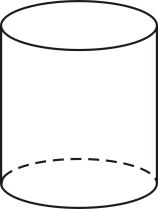
圆柱C． 四棱柱D．
四棱柱D． 三棱锥
三棱锥2．（23-24七年级上·贵州贵阳·期中）下列几何体中，圆锥是（ ）
A．
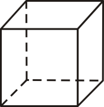
B． C．
C．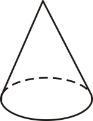
D．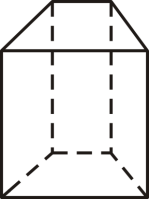
3．（23-24七年级上·贵州毕节·期中）下面的几何体中没有曲面的是（ ）.
A． B．
B． C．
C．
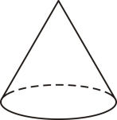
D．
4．（23-24六年级上·山东泰安·期中）下面几何体中，是三棱锥的是（ ）
A． B．
B． C．
C． D．
D．
【考点二 几何体中的点、棱、面】
例题：（23-24六年级上·山东烟台·期中）五棱柱是由 个面围成的，有 个顶点，共有 条棱．
【变式训练】
1．（23-24七年级上·重庆沙坪坝·期中）一个七棱柱有 个面； 个顶点．
2．（23-24七年级上·陕西西安·期中）如图，这是一个五直棱柱，若它的底面边长都是 ，侧棱长都是
，侧棱长都是 ，回答下列问题：
，回答下列问题：
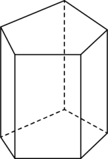
(1)它有________个侧面，________个底面．
(2)它的所有侧面的面积之和是多少？
4．（23-24六年级上·山东泰安·期中）推理猜测：
(1)三棱锥有________条棱，________个面；四棱锥有________条棱，________个面．
(2)________棱锥有30条棱，________棱锥有101个面；
(3)有没有一个多棱锥，其棱数是2024，若有，求出它有多少个面；若没有，说明为什么？
4．（23-24七年级上·四川达州·阶段练习）十八世纪瑞士数学家欧拉证明了简单多面体中顶点数（V）、面数（F）、棱数（E）之间存在的一个有趣的关系式，被称为欧拉公式．请你观察下列几种简单多面体模型，回答下列问题：
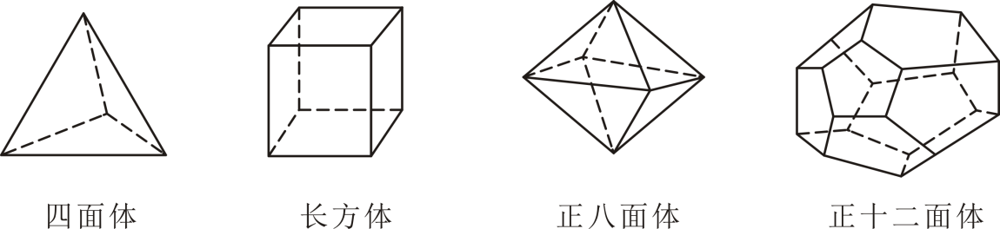
(1)根据上面多面体模型，完成表格中的空格：
多面体 | 顶点数（V） | 面数（F） | 棱数（E） |
四面体 | 4 | 4 | |
长方体 | 8 | 6 | 12 |
正八面体 | 8 | 12 | |
正十二面体 | 20 | 12 | 30 |
四面体棱数是_；正八面体顶点数是_．
你发现顶点数（V）、面数（F）、棱数（E）之间存在的关系式是_．
(2)一个多面体的面数比顶点数小8，且有30条棱，则这个多面体的面数是_．
(3)某个玻璃饰品的外形是简单多面体，它的外表面是由三角形和八边形两种多边形拼接而成，且有24个顶点，每个顶点出都有3条棱，设该多面体外表三角形的个数为 个，八边形的个数为
个，八边形的个数为 个，求
个，求 的值．
的值．
【考点三 点、线、面、体四者之间的关系】
例题：（23-24七年级上·河南许昌·期末）中国扇文化有着深厚的文化底蕴；历来中国有“制扇王国”之称． 如图，打开折扇时，随着扇骨的移动形成一个扇面，这种现象可以用数学原理解释为（ ）
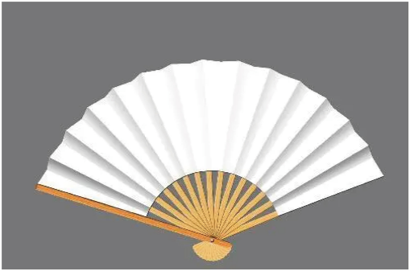
A．点动成线 B．线动成面 C．面动成体 D．两点确定一条直线
【变式训练】
1．（22-23七年级上·山东临沂·期末）中华武术是中国传统文化之一，是中华民族在日常生活中结合社会哲学、中医学、伦理学、兵学、美学、气功等多种传统文化思想和文化观念，注重内外兼修，诸如整体观、阴阳变化观、形神论、气论、动静说、刚柔说等，逐步形成了独具民族风貌的武术文化体系.“枪挑一条线，棍扫一大片”，从数学的角度解释为（ ）
A．点动成线，线动成面 B．线动成面，面动成体
C．点动成线，面动成体 D．点动成面，面动成线
2．（23-24七年级上·陕西西安·期中）“力箭一号” 运载火箭在酒泉卫星发射中心采用“一箭六星”的方式，成功将六颗卫星送入预定轨道，首次飞行任务取得圆满成功．把卫星看成点，则卫星在预定轨道飞行留下的痕迹体现了 的数学事实．
运载火箭在酒泉卫星发射中心采用“一箭六星”的方式，成功将六颗卫星送入预定轨道，首次飞行任务取得圆满成功．把卫星看成点，则卫星在预定轨道飞行留下的痕迹体现了 的数学事实．
3．（23-24七年级上·河南郑州·期中）请写出生活中的一个现象，使其可解释为“点动成线”，你所写的这个现象是 .
4．（22-23七年级上·广东河源·期中）表的指针旋转时，会形成一个圆面，笔在纸上移动时，能画出线．一般地，点动成线， ， ．
【考点四 平面图形旋转后所得的立体图形】
例题：（23-24七年级上·贵州贵阳·期中）如图是一个由平面图形绕虚线旋转得到的立体图形，则这个平面图形是（ ）
A． B． C．
C． D．
D．
【变式训练】
1．（23-24七年级上·陕西咸阳·期中）以 为轴旋转一周后得到的立体图形是（ ）
为轴旋转一周后得到的立体图形是（ ）
 A．
A． B．
B． C．
C．
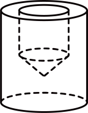
D．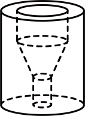
2．（23-24七年级上·陕西榆林·期中）如图是一张长方形纸片，长方形的长为 ，宽为
，宽为 ，若将此长方形纸片绕它的一边所在直线旋转一周，得到一个几何体．
，若将此长方形纸片绕它的一边所在直线旋转一周，得到一个几何体．

(1)这个几何体的名称是 ，这个现象用数学知识解释为 ；
(2)求得到的这个几何体的体积（结果保留 ）
）
3．（22-23七年级上·广东深圳·期中）如图，某银行大堂的旋转门内部由三块宽为 、高为
、高为 的玻璃隔板组成．
的玻璃隔板组成．
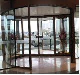
(1)将此旋转门旋转一周，能形成的几何体是_____，这能说明的事实是_____（选择正确的一项填入）．
A．点动成线 B．线动成面 C．面动成体
(2)求该旋转门旋转一周形成的几何体的体积．（边框及衔接处忽略不计，结果保留 ）
）
【考点五 正方体的展开图】
例题：（23-24七年级上·四川达州·期中）如图所示，不是正方体展开图形的是（ ）
A． B．
B． C．
C． D．
D．
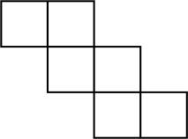
【变式训练】
1．（23-24七年级上·宁夏中卫·期中）如图，现有5个写有“传承红色基因”字样的正方形，在图中增加1个写有“因”字的正方形使所得图形经过折叠能够围成一个正方体，下列选项添加错误的是（ ）．

A．
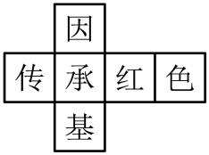
B． C．
C． D．
D．
2．（23-24七年级上·山东济南·期中）从如图所示的7个小正方形中剪去一个小正方形，使剩余的6个小正方形折叠后能围成一个正方体，则不能剪去的小正方形上的字是（ ）
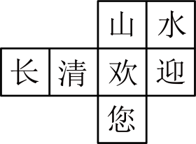
A．山 B．水 C．您 D．迎
3．（22-23六年级下·山东东营·期中）如图，将正方体的平面展开图重新折成正方体后，“数”字对面的字是（ ）

A．喜 B．欢 C．我 D．学
4．（23-24七年级上·河南许昌·期末）诸葛亮的《诫子书》中有“非学无以广才”，如图是正方体的一种表面展开图，则原正方体中与“非”字所在的面相对的面上的汉字是（ ）

A．学 B．以 C．广 D．才
5．（23-24七年级上·广东梅州·期中）如图所示的是一个正方体的展开图，这个正方体可能是（ ）
 AI
AI
A． B．
B． C．
C．
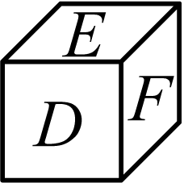
D．
6．（22-23七年级上·广东梅州·期中）将如图所示的硬纸片围成正方体纸盒（接缝粘贴部分忽略不计），则围成的正方体纸盒是（ ）

A． B．
B．
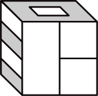
C． D．
D．
7．（23-24七年级上·四川达州·期中）如图是一个正方体的平面展开图，则这个正方体是（ ）
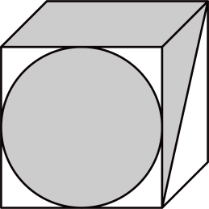
A．
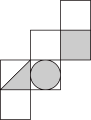
B．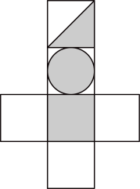
C． D．
D．
8．（23-24七年级上·广东深圳·期中）把如图所示的正方体展开，则选项中哪一个图形不是这个正方体的展开图（ ）

A． B． C．
B． C．
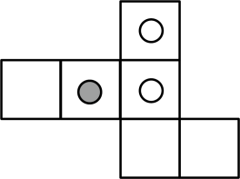
D．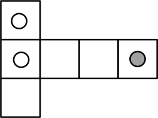
【考点六 几何体的展开图】
例题：（23-24六年级下·黑龙江哈尔滨·期中）下列图形是三棱柱的平面展开图的是( )
A． B．
B．
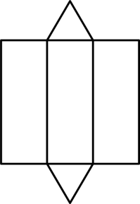
C． D．
D．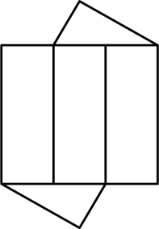
【变式训练】
1．（23-24六年级下·黑龙江哈尔滨·期中）如图，下方立体图形的展开图是（ ）
 A．
A． B．
B． C．
C． D．
D．
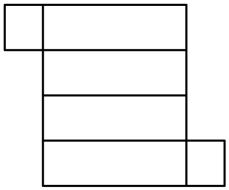
2．（23-24七年级上·四川达州·期末）如图所示为几何体的平面展开图，从左到右，其对应的几何体名称分别为（ ）

A．圆锥、正方体、三棱柱、圆柱 B．圆柱、正方体、圆锥、三棱柱
C．圆锥、正方体、圆柱、三棱柱 D．圆柱、圆锥、正方体、圆锥
3．下列选项中，左边的平面图形能够折成右边封闭的立体图形的是（ ）
A． B．
C． D．
【考点七 从不同方向看几何体】
例题：（23-24七年级上·山东济南·期中）如图是由5个相同的小立方块搭成的几何体，从正面看这个几何体是（ ）

A． B．
B． C．
C． D．
D．
【变式训练】
1．（23-24七年级上·广东梅州·期中）下列物体是由五个棱长为 的正方体组成如图的几何体．
的正方体组成如图的几何体．
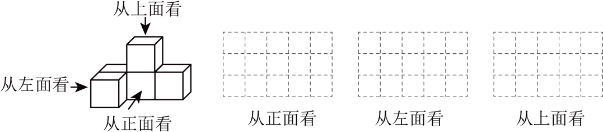
(1)该几何体的体积是 ，表面积是 ；
(2)分别画出从正面、左面、上面看到的立体图形的形状．
2．（22-23七年级上·辽宁丹东·期中）如图，是由一些棱长为的小正方体组成的简单几何体，
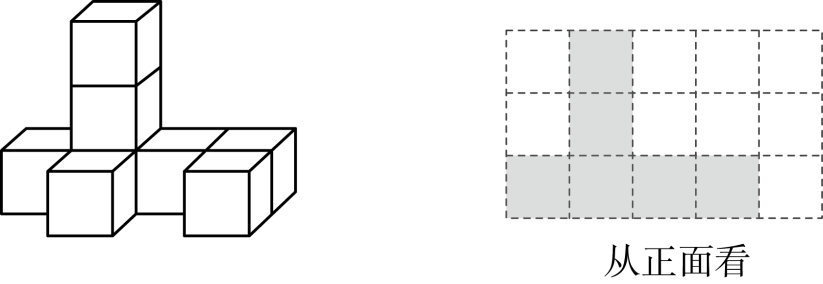
(1)从正面看到的平面图形如图所示，请在下面方格中分别画出从左向右、从上向下看到的平面图形；
(2)请直接写出该几何体的表面积（含下底面）为______．
3．（23-24七年级上·贵州贵阳·期中）一个几何体由若干大小相同的小立方块搭成，下图分别是从它的正面、上面看到的形状图．

(1)该几何体至少是______块小立方块搭成的；
(2)该几何体最多是用______块小立方块搭成的；
(3)当搭成该几何体的小立方块最多时，画出从左面看到的几何体的形状图．
4．（23-24七年级上·辽宁沈阳·期中）作图
(1)如图是由10个同样大小的小正方体搭成的几何体，请分别画出它的主视图和俯视图．

(2)在主视图和俯视图不变的情况下，你认为最多还可以添加________个小正方体．
(3)若每个小正方体的边长为1，则这个几何体的表面积为________．
5．（23-24六年级上·山东东营·期中）如图，是用几个相同的正方体搭出的几何体，请解答下列问题：

(1)分别在方格纸中画出从正面、左面、上面看这个几何体时看到的图形；
(2)如果在这个几何体上再添加几个相同的小正方体，使新几何体和原几何体分别从上面和从左面看到的形状相同，添加小正方体个数最少可以摆______个，最多可以摆______个．
(3)若每个小正方体的棱长为 ，要给这个几何体地面以上的部分涂上颜色，求涂色部分的面积；
，要给这个几何体地面以上的部分涂上颜色，求涂色部分的面积；
【考点八 由展开图求几何体的表面积和体积】
例题：（23-24七年级上·广东茂名·期中）小明同学将一个长方体包装盒展开，进行了测量，结果如图所示：求这个包装盒的表面积和体积．

【变式训练】
1．（23-24七年级上·陕西汉中·期中）如图，是一个几何体的表面展开图．
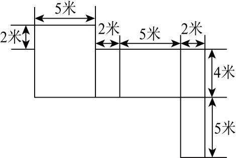
(1)该几何体是______________；
(2)求该几何体的体积．
2．（23-24七年级上·安徽宿州·期中）赵新在掌握了长方体盒子的制作方法后，制作的一个半成品的平面图如图所示．
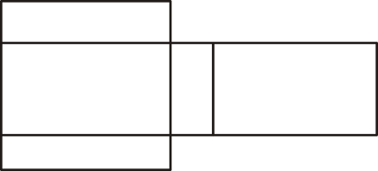
(1)在图中补充一个长方形，使该平面图能折叠成一个长方体盒子；
(2)已知赵新制作的长方体盒子的长是 ，宽是
，宽是 ，高是
，高是 ，求这个长方体盒子的体积．
，求这个长方体盒子的体积．
3．（23-24七年级上·辽宁沈阳·期中）如图，是一个几何体的表面展开图．

(1)该几何体是______；
(2)依据图中数据求该几何体的体积；
(3)截去这个几何体的一个角，剩余的立体图形有几条棱？请直接写出答案．
4．（22-23七年级上·河南南阳·期末）某“综合实践”小组开展了“长方体纸盒的制作”实践活动，他们利用边长为a（cm）的正方形纸板制作出两种不同方案的长方体盒子（图1为无盖的长方体纸盒，图2为有盖的长方体纸盒）．

【操作一】根据图1方式制作一个无盖的长方体盒子．方法：先在纸板四角剪去四个同样大小边长为b（cm）的小正方形，再沿虚线折合起来．
【问题解决】
(1)若
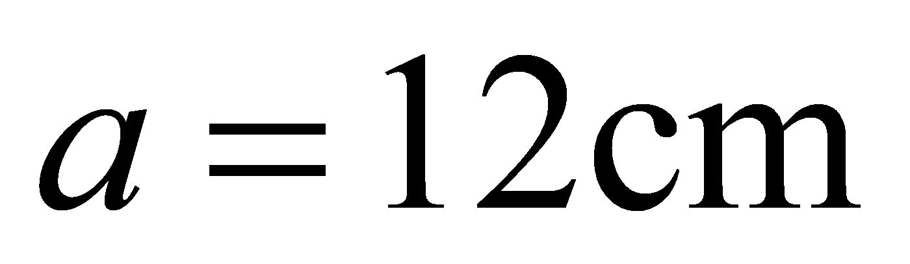
，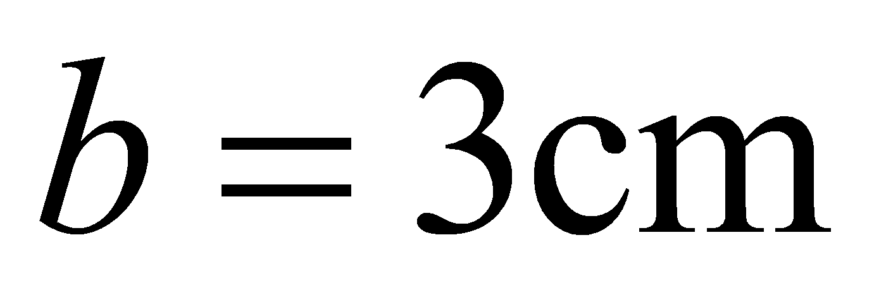
，则长方体纸盒的底面积为___________；【操作二】根据图2方式制作一个有盖的长方体纸盒．方法：先在纸板四角剪去两个同样大小边长为b（cm）的小正方形和两个同样大小的小长方形，再沿虚线折合起来．
【拓展延伸】
(2)若，
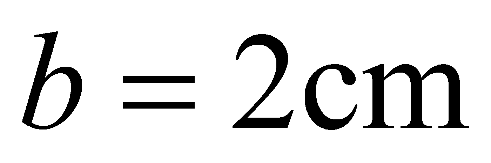
，该长方体纸盒的体积为___________；(3)现有两张边长a均为 的正方形纸板，分别按图1、图2的要求制作无盖和有盖的两个长方体盒子，若
的正方形纸板，分别按图1、图2的要求制作无盖和有盖的两个长方体盒子，若 ，求无盖盒子的体积是有盖盒子体积的多少倍？
，求无盖盒子的体积是有盖盒子体积的多少倍？